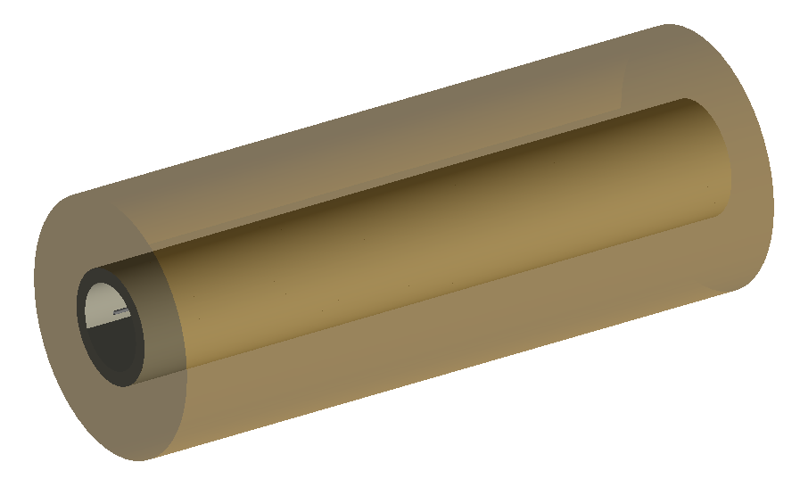
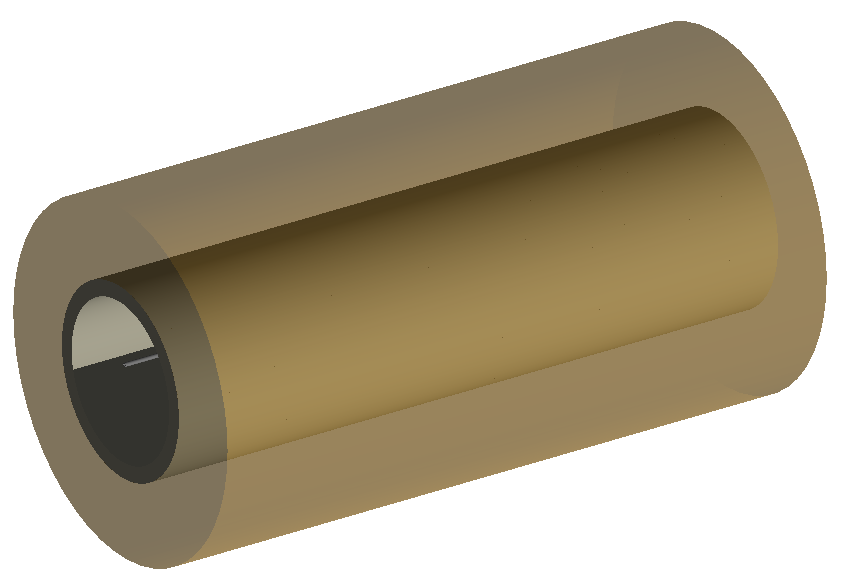
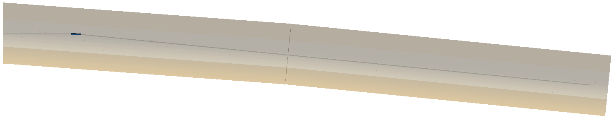
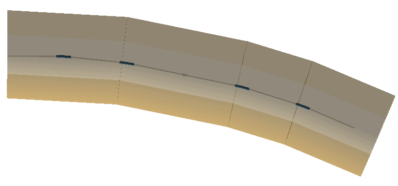
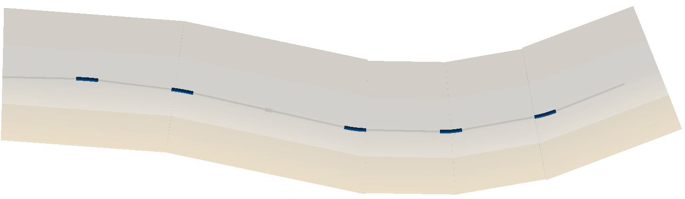
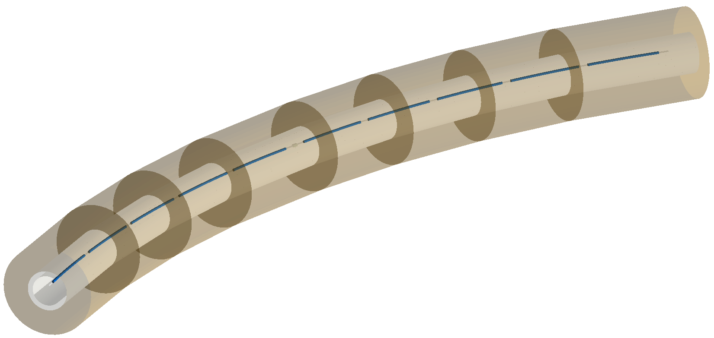
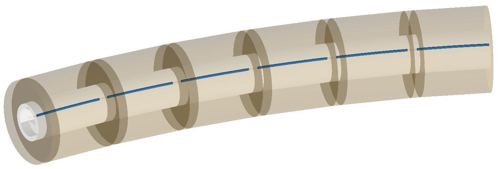

Tunnel Geometry
For each tunnel test, there is an a and a b version. These are the same as the indiviual test but with elliptical and rectangular geometry respectively. A square tunnel section is really just a rectangular tunnel section, so this is tested as well.
1_long_straight.gmad
A drift section, with a thin collimator that’s offset so the beam definitely hits it, followed by another long drift section. The tunnel is cylindrical, and of a typical size of an acceleartor and offset a little bit. The floor and soil are also built. This uses the newer modular physics lists.
This test builds one straight section of tunnel from start to finish irrespective of the
beam line as controlloed by buildTunnelStraigh=1.
Key code:
option, buildTunnel=1,
buildTunnelStraight=1,
tunnelType="circular",
tunnelThickness=1*m,
tunnelSoilThickness=5*m,
tunnelMaterial="concrete",
soilMaterial="soil",
buildTunnelFloor=1,
tunnelFloorOffset=1.2*m,
tunnelAper1=5*m,
tunnelAper2=3*m,
tunnelSensitive=1,
tunnelVisible=1,
tunnelOffsetX=0.4*m,
tunnelOffsetY=-1.2*m;
How to run:
bdsim --file=1_long_straight.gmad
{kind=link}

2_long_straight_following.gmad
This is the same as 1_long_straight.gmad but the tunnel building algorithm is allowed to follow the beam line. As it’s straight, it should result in a very similar outcome.
Key code:
option, buildTunnelStraight=0;
How to run:
bdsim --file=2_long_straight_following.gmad
{kind=link}

3_initial_bend.gmad
This lattice has a relatively strong bend at the beginning of the lattice, followed by a long straight section. This tests the tunnel building algorithm’s ability to follow the beam line after a bend.
How to run:
bdsim --file=3_initial_bend.gmad
{kind=link}

4_several_bends.gmad
This lattice has long straight sections with relatively sharp bends and this pattern is repeated several times.
How to run:
bdsim --file=4_several_bends.gmad
{kind=link}

5_several_bends_back_and_forth
This examples is much like 4_several_bends.gmad but also bends the otherway (back and forth).
How to run:
bdsim --file=5_several_bends_back_and_forth.gmad
{kind=link}

6_very_long_following.gmad
This example is much like 2_long_straight_following.gmad but longer and with not round number lengths. Being longer, the tunnel algorithm will split the tunnel sections up more than the single section produced in 2.
How to run:
bdsim --file=6_very_long_following.gmad
{kind=link}
7_long_arc.gmad
This example contains more gradual bends and many of them separated by short drifts and is relatively long. This tests part of an arc in a collider.
How to run:
bdsim --file=7_long_arc.gmad
{kind=link}

8_samplers.gmad
This examples is roughly based on 7_long_arc.gmad (similar in form but not exactly) with the addition of samplers on every element, including a marker at the end as well as a superfluous one at the beginning. The tunnel geometry should break around these samplers leaving a 1 \(\mu m\) gap to avoid geometrical overlaps.
How to run:
bdsim --file=8_samplers.gmad
{kind=link}
